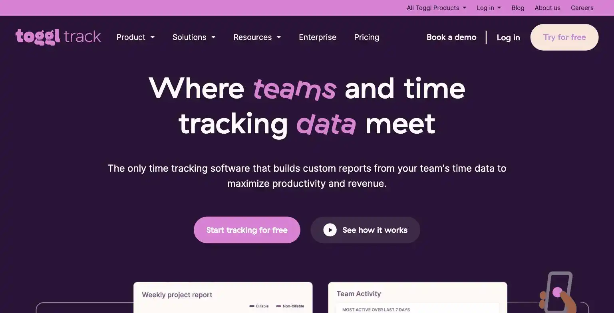
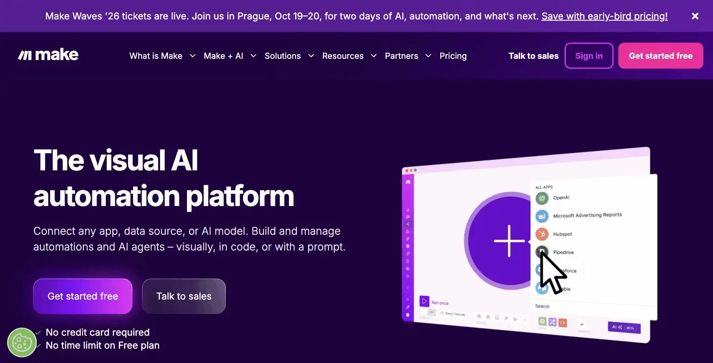

Make
Make is a visual automation platform and a direct alternative to Zapier, built around a canvas-style workflow builder rather than Zapier's linear step list. The free plan includes 1,000 operations/month at no cost, with Core starting at $9/month for 10,000 credits. The site's verdict is worth switching to if you've hit Zapier's pricing ceiling, Make's credit-based model is typically cheaper for complex, multi-step automations, but the visual builder has a steeper learning curve than Zapier's simpler linear flow.
- Value for price7.5/10
- Capability7/10
- Ease of use6/10
- Trial safety7.5/10

Make's canvas-style builder lays out an entire automation visually, branches, routers, and multiple actions per trigger all on one screen, which handles complex logic more naturally than Zapier's linear step-by-step format, at the cost of a steeper initial learning curve for anyone used to simpler automation tools.

Make's differentiator against Zapier is the visual, branching canvas: instead of a single linear chain of steps, you can see and build parallel paths, conditional routing, and error handling all in one view, which becomes a real advantage once an automation gets past 3-4 steps.
Example from make.com. Not independently tested by Solos Gems.Pricing breakdown
- Free: 1,000 operations/month (credit-based since August 2025), unlimited scenarios
- Core ($9/mo): 10,000 credits/month, unlimited scenarios
- Pro ($16/mo): 10,000 credits/month plus priority execution, custom variables, full execution log
- Teams ($29/mo): Adds team roles and a shared scenario library
- Enterprise: Custom pricing for larger organizations
Make vs. Zapier for a solo operator
The practical difference for a solopreneur comes down to automation complexity. Simple, single-step automations (new form submission to a Slack message) cost about the same on either platform. Where Make pulls ahead is multi-step, conditional automations, its credit-based pricing tends to go further than Zapier's task-based pricing once a workflow branches into multiple paths or conditional logic, which matters if your business runs several interconnected automations rather than one or two simple ones.
Pros
- Credit-based pricing typically stretches further than Zapier for complex automations
- Free tier's 1,000 operations/month is enough to run several small automations
- Visual canvas makes branching and conditional logic easier to build and debug
Cons
- Steeper learning curve than Zapier's simpler linear step format
- Credit consumption isn't always intuitive to predict in advance
- Fewer native app integrations than Zapier's larger ecosystem
See how this compares to Zapier →